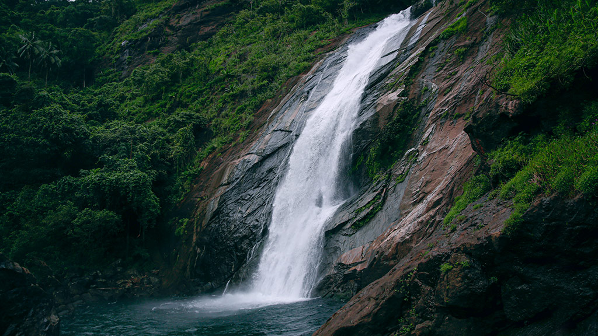

Illickal

One of the most popular tourist destinations in Kottayam district is Illickal Kallu, situated on a majestic hill called Illickal Mala. There are numerous mountain streams in Illickal Mala, which is 6,000 ft above sea level, and they flow down to form the serene Meenachil River. Each of the three hills has a peculiar shape. One of them resembles a mushroom and hence, its name ‘Kuda Kallu’ (umbrella-shaped rock). The second hill has a small hunch on the side and is therefore called as ‘Koonu Kallu’ (hunchback rock). The third one is called Illickal Kallu as it derives its name from the mountain itself. The steep rock on the top of the hill has a part of its peak shorn off. There is a 1⁄2-foot-wide bridge called Narakapalam (bridge to hell) connecting these two hills. The beauty and the landscape of illikkal kallu is similar to that of the pillar rocks in Kodaikanal. It is said that the mythical medicinal herb Neela Koduveli grows here. This mythical blue flower is also believed to possess supernatural powers, which could increase wealth and ensure a rich harvest.From the hilltops, the Arabian Sea can be seen on the far horizon as a thin blue stroke. The view of the sunset from above the peak in the evening of a full moon day can be sensational, the moon can be seen rising up like another sun, as the orange sun goes down.
Ilaveezhapoonchira

The beautiful valley of Ilaveezhapoonchira, one amongst the many prime picnicking spots in kottayam. The beautiful hillocks near Kanjar are known to have great trails for trekking. The view in itself is breath-taking. During the Monsoons, the entire place transforms into a surreal spectacle. The terrain changes and one observes Nature at her best. It is highly recommended to view both sunrise and sunset from the valley as the picturesque landscape opens up in a unique and exhilarating way at those specific times.
Kumarakom Bird Sanctuary

Kumarakom Bird Sanctuary is among the most popular bird watching spots in the country. Spread out over 14 hectares, one comes across numerous rare avian species in these parts. Located on the banks of the Vembanad Lake in Kottayam, one gets to see a variety of migratory birds that flock in thousands, ranging from places like the Himalayas to Siberia. People who visit in June and August are treated to many rare sights. This is the breeding season of the resident wetland birds such as Indian Darter, Little Cormorant, different species of egrets and herons, White Ibis and several species of kingfishers. People also get to see the waterfowl, cuckoo, owl, water duck, Siberian Cranes, parrots, teal, larks, flycatchers and wood beetles. Boating trips around the sanctuary is extremely relaxing and this is among the most visited places in Kottayam district.
Maramala Waterfalls
Located in Teekoy village on the way to Vagamon Hill Station, Marmala Waterfalls in Kottayam district is a year-round destination and calls for a little bit of trekking a rocky terrain amid the scenic village. Falling from a height of 60 metre, the waterfall is surrounded by dense forests and plantations. It is popular during monsoon season during which the waterfall will descend in all its glory and splendor
Aruvikkuzhi Waterfalls

Aruvikkuzhi Waterfalls are loved for the natural beauty they possess along with the quaint charm of the surrounding rubber plantations. The trails surrounding the area along with the cool water falling from over 100 ft. make it a picnicker’s paradise. Families are regularly seen camping in this wonderful spot in Kottayam. One gets the distinct feeling of being hugged directly by nature when you stand here. The cool breeze and affable climate make this among the best picnic spots in the district. St. Mary's Church at the top of the waterfalls is another added incentive to visit the place.